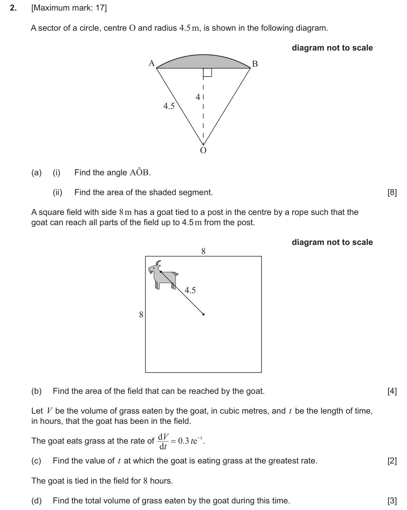
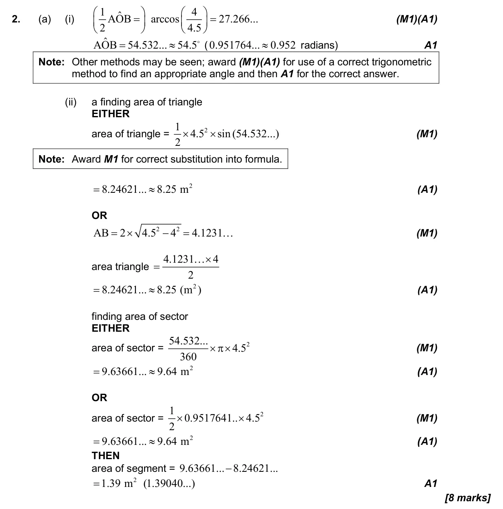
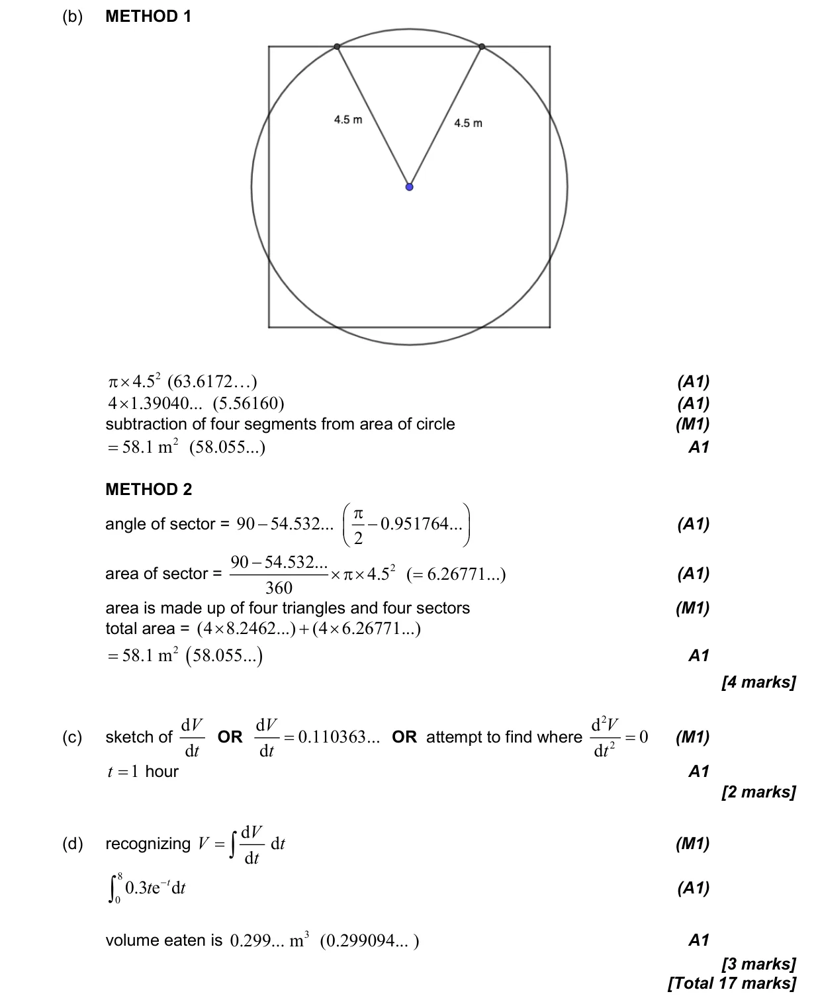

17 marks P2 TZ1 Calculator 3.4 Arc length and sector area in degrees3.2 2D and 3D trigonometry, sine rule, cosine rule and area5.5 Integration introduction, areas between curve and x-axis5.10 The second derivative and the second derivative test Question Hide breakdown abcd Markscheme 